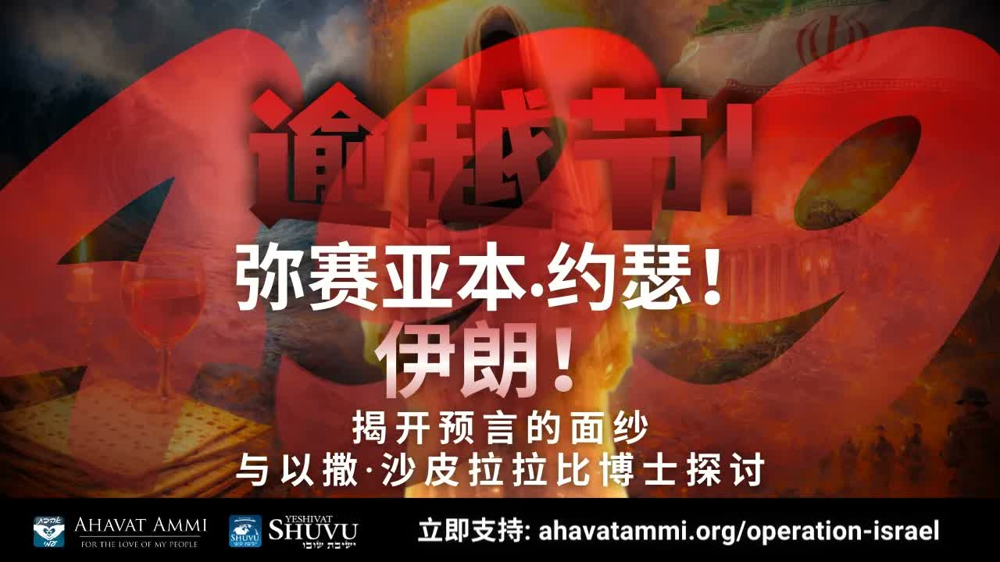

Mashiach ben Yosef, and the Redemption of Nisan" />499 奧秘、彌賽亞·本·約瑟與尼散月的救贖 The 499 Mystery, Mashiach ben Yosef, and the Redemption of Nisan
Yalkut Shimoni 499 段這段塵封千年的米大示，描寫「波斯王嘲笑阿拉伯王、阿拉伯人攻擊阿拉伯人」——而我們此刻正在新聞中看見它應驗。沙皮拉拉比指出：這是彌賽亞·本·約瑟在尼散月被「釋放」的時刻。 Yalkut Shimoni Remez 499 — a midrash buried for a millennium — describes “the King of Persia mocking the King of Arabia” and “Arabs attacking Arabs.” We are watching it on the news. Rabbi Shapira's claim: this is the moment Mashiach ben Yosef is being released, in the month of Nisan.
Yalkut Shimoni 是中世紀拉比們蒐集的米大示彙編，第 499 段是其中一段最令現代讀者震動的：在它寫成的那個世紀，沒有人能想像「波斯王嘲笑阿拉伯王、阿拉伯王回頭攻擊阿拉伯王」會是末世開啟的記號。今天打開新聞——伊朗對沙特、阿聯、巴林同時施壓，阿拉伯國家彼此交戰、彼此防備——這正是 499 段所描述的場景。拉比沙皮拉指出：這段米大示有一個極特別的時間印記——它說，這場戰爭發生在尼散月(Nisan)，而這場戰爭釋放出那位拉比傳統所稱「彌賽亞·本·約瑟」(Mashiach ben Yosef)——那位受苦的彌賽亞。 The Yalkut Shimoni is a medieval rabbinic compendium of midrash, and section 499 is one of its most jarring passages for a modern reader: in the century it was written, no one could have imagined that “the King of Persia mocking the King of Arabia, and the Arabs in turn attacking the Arabs” would be a sign of the end-times opening. Open today's news — Iran pressing Saudi Arabia, the UAE and Bahrain simultaneously; Arab states fighting each other and bracing against each other — this is the picture Remez 499 paints. Rabbi Shapira's observation goes further: this midrash carries a singular time-stamp — it places this war in Nisan, and says the war releases the figure the rabbis call Mashiach ben Yosef — the suffering Messiah.
一、尼散月 ── 救贖之月I. Nisan — The Month of Redemption
在猶太曆法中，尼散月（Nisan，ניסן）是「救贖之月」。出埃及在尼散月發生（出埃及記 12:2）；逾越節（Pesach）在尼散月慶祝；塔木德 Rosh Hashanah 11a 明確記載：「在尼散，他們得贖；在尼散，他們將要得贖。」(Bnisan nig'alu, Bnisan atidim l'higael) In the Jewish calendar, the month of Nisan (Nisan, ניסן) is “the month of redemption.” The Exodus happened in Nisan (Exodus 12:2); Passover (Pesach) is celebrated in Nisan; the Talmud (Rosh Hashanah 11a) plainly says: “In Nisan they were redeemed, and in Nisan they will be redeemed in the future.” (Bnisan nig'alu, Bnisan atidim l'higael)
拉比們很少對「彌賽亞何時來」說具體時間。但對「在哪個月份」的問題，他們的傳統極為一致：尼散。沙皮拉拉比在這段教導中以一句話總結：「救贖在尼散開始，也將在尼散結束。」 Rabbis are famously cautious about predicting when the Messiah will come. But on the question of which month, the tradition is remarkably consistent: Nisan. Rabbi Shapira sums it up in one line: “Redemption begins in Nisan and will also end in Nisan.”
二、Rabbi Laniado 五百年前的預言 ── Botsra 與霍爾木茲II. Rabbi Laniado's 500-Year-Old Prophecy — Botsra and Hormuz
16 世紀的拉比 Shmuel Laniado 在他對以賽亞書 34:6 的注釋中寫下一段令人震動的話。以賽亞書 34:6 說：「耶和華在波斯拉有大殺戮 (Tevach Gadol)，在以東地有大屠殺。」Laniado 把「波斯拉 (Botsra)」識別為——按他當時的地理理解——離巴比倫遙遠、靠近亞述與伊朗、夾在以東與一個「狹窄海峽」之間、由「以實瑪利」（伊朗）控制的地方。 In the 16th century, Rabbi Shmuel Laniado wrote a striking line in his commentary on Isaiah 34:6. The verse reads: “The LORD has a great slaughter (Tevach Gadol) in Botsra, and a great butchery in the land of Edom.” Laniado identified “Botsra” — by the geography of his time — as a place far from Babylon, on the border of Assyria and Iran, between Edom and a “narrow strait,” controlled by Ishmael (Iran).
對於一個五百年前住在敘利亞的拉比，這段描述沒有任何具體政治意義。對於今天打開地圖的讀者，這段描述準確地對應於——霍爾木茲海峽周邊的伊朗控制區。Laniado 接著說：「歌革與瑪各之戰，可能就從那裡開始。」 To a 16th-century Syrian rabbi, this description carried no specific political meaning. To a reader opening a map today, it lands precisely on — the Iran-controlled zone surrounding the Strait of Hormuz. Laniado then writes: “the war of Gog and Magog perhaps begins there.”
三、Yalkut Shimoni Remez 499 ── 「499 奧秘」III. Yalkut Shimoni Remez 499 — “The 499 Mystery”
Yalkut Shimoni 是中世紀拉比 Shimon HaDarshan 整理的米大示彙編，被猶太傳統視為極其權威的文本之一。其第 499 段（Remez 499）——以賽亞書 60:1「興起發光！」(Kumi Ori) 的注釋——寫下這段預言： The Yalkut Shimoni is a medieval midrashic compendium edited by Rabbi Shimon HaDarshan, considered one of the most authoritative such texts in Jewish tradition. Its section 499 (Remez 499) — commenting on Isaiah 60:1, “Arise, shine!” (Kumi Ori) — contains this prophecy:
「在彌賽亞王將要被顯現的那一年，列國的諸王將彼此嘲笑。波斯王嘲笑阿拉伯王，阿拉伯王前往波斯王的軍中尋求建議，波斯王回頭，意圖徹底毀滅整個世界。列國將驚惶失措、跌倒在臉上、被陣痛所抓住，像產婦的劇痛一樣。」——Yalkut Shimoni Remez 499（米大示彙編 499 段） “In the year the King Messiah is to be revealed, the kings of the nations will mock one another. The King of Persia mocks the King of Arabia; the King of Arabia goes to the King of Persia for counsel; the King of Persia turns about, intending to destroy the whole world. The nations will be seized with panic and fall on their faces, gripped by birth-pangs, like a woman in childbirth.”— Yalkut Shimoni, Remez 499
把這段話放回它寫作的時代——大約 11–13 世紀的歐洲——你會發現它的奇異：當時的「波斯」是塞爾柱與蒙古勢力交替，「阿拉伯」是哈里發殘餘。「波斯王嘲笑阿拉伯王」沒有當代意義。但今天的中東：伊朗與沙特、阿聯、巴林之間，這正是頭條新聞。 Place this passage back in its time of composition — roughly the 11th–13th century in Europe — and you see how strange it is. At that point “Persia” was Seljuk and Mongol; “Arabia” was the residual Caliphate. “The King of Persia mocking the King of Arabia” had no contemporary referent. Today's Middle East — Iran versus Saudi Arabia, the UAE, Bahrain — is the headline news.
四、彌賽亞·本·約瑟 ── 受苦的彌賽亞IV. Mashiach ben Yosef — The Suffering Messiah
499 段繼續描寫一個令大多數基督徒驚訝的場景：諸列祖（亞伯拉罕、以撒、雅各）對「彌賽亞·本·以法蓮」說話。猶太傳統有兩位彌賽亞的概念：彌賽亞·本·約瑟（Mashiach ben Yosef，又稱本以法蓮，ben Ephraim）是受苦的、為以色列承擔苦難的彌賽亞；彌賽亞·本·大衛（Mashiach ben David）是得勝的、登王位的彌賽亞。 Remez 499 continues with a scene that startles most Christians: the patriarchs (Abraham, Isaac, Jacob) speak to “Messiah ben Ephraim.” Jewish tradition holds the concept of two Messiahs: Mashiach ben Yosef (also called ben Ephraim) is the suffering Messiah who bears the suffering for Israel; Mashiach ben David is the victorious Messiah who ascends the throne.
在 499 段中，「彌賽亞·本·以法蓮」被描述為「為以色列承擔罪孽與苦待，受列國嘲笑」——這個圖景對任何讀過以賽亞書 53 章的基督徒來說，都異常熟悉。沙皮拉拉比明確指出：這就是耶書亞 (Yeshua) 第一次降臨時的形象——本·約瑟的彌賽亞，先於本·大衛的彌賽亞。 In Remez 499, “Messiah ben Ephraim” is described as “bearing the sins and harshness for Israel, mocked by the nations” — a picture that any Christian who has read Isaiah 53 will find uncannily familiar. Rabbi Shapira makes the link explicit: this is the picture of Yeshua at His first coming — the Messiah of ben Yosef, before the Messiah of ben David.
然後米大示說：「神將彌賽亞舉到天上，神對彌賽亞·本·以法蓮說：『你要審判這百姓』（指那些惡的波斯人）。」這個「以法蓮被釋放進入世界」的時刻，米大示明說——發生在與波斯（伊朗）的戰爭之中。 Then the midrash continues: “the Holy One lifts the Messiah to the heavens, and tells Messiah ben Ephraim: ‘judge these people’” (the wicked Persians). This moment of “Ephraim being released into the world,” the midrash says explicitly, happens during the war with Persia.
五、普珥節與尼散月 ── 「中度為中度」V. Purim and Nisan — “Measure for Measure”
以斯帖記 3:7 記載哈曼擲普珥（Pur，「籤」，源自波斯語「命運」）來決定屠殺以色列人的日期——那一刻，是尼散月初一。哈曼是以色列的死敵，他在尼散月對以色列下了詛咒；歷史的反轉是，哈曼自己被掛在他預備給末底改的木架上。 Esther 3:7 records that Haman cast the Pur (פור, “lot,” from the Persian word for “fate”) to determine the day of the slaughter of the Jews — that moment was the first of Nisan. Haman was Israel's mortal enemy; he laid a curse on Israel in Nisan; the historical reversal is that Haman himself was hanged on the gallows he had prepared for Mordechai.
拉比們稱這個原則為 Middah k'neged middah（מידה כנגד מידה，「中度為中度」、「以對等之度回報」）。沙皮拉拉比的應用：今日的伊朗（波斯）對以色列下了類似哈曼的詛咒——「以色列必亡」（Death to Israel）。按 Middah k'neged middah 的原則，那個被擲下去的籤要回到擲籤者本身——並且，按米大示的時間印記，就在尼散月。 The rabbis call this principle Middah k'neged middah (מידה כנגד מידה, “measure for measure”). Rabbi Shapira's application: modern Iran (Persia) has laid a Haman-like curse on Israel — “Death to Israel.” By the principle of Middah k'neged middah, the lot returns to the one who cast it — and, by the midrash's time-stamp, it returns in Nisan.
六、對基督徒的意義 ── 兩位彌賽亞，一位耶書亞VI. What This Means for Christians — Two Messiahs, One Yeshua
「兩位彌賽亞」這個猶太概念對許多基督徒來說很陌生，甚至令人不安——「彌賽亞不就是一位嗎？」是的——對基督徒來說，彌賽亞只有一位，就是耶書亞。但耶書亞要來兩次：第一次以「本·約瑟」的形象來——受苦、被擯棄、被列國嘲笑、為祂的百姓承擔罪孽（以賽亞書 53）；第二次以「本·大衛」的形象來——以王者的身份回到耶路撒冷，建立祂永遠的國度。 The Jewish concept of “two Messiahs” is unfamiliar — even unsettling — to many Christians. “Isn't there one Messiah?” Yes — for Christians, there is one Messiah, and He is Yeshua. But Yeshua comes twice: the first time in the form of ben Yosef — suffering, despised, mocked by the nations, bearing the sins of His people (Isaiah 53); the second time in the form of ben David — returning to Jerusalem as King, to establish His everlasting kingdom.
這個雙重圖景並非基督徒對猶太傳統的「外加」——它一直在猶太傳統內部，Yalkut Shimoni 499 是其中一個最清楚的見證。理解這一點，能讓基督徒看見：耶書亞的兩次降臨，並非新約的發明，而是古老猶太彌賽亞論的合理應驗。 This double picture is not a Christian imposition on Jewish tradition — it lives inside Jewish tradition itself, and Remez 499 is one of its clearest witnesses. Understanding this allows Christians to see: Yeshua's two comings are not a New Testament invention. They are the legitimate fulfilment of ancient Jewish messianism.
對華人基督徒來說，這意味著一個豐富的禮物：你不必在「猶太彌賽亞」與「基督教彌賽亞」之間二擇一。它們是同一位——以兩個面相，在兩個時代中顯現的耶書亞。 For Chinese Christians this is a rich gift: you do not have to choose between “the Jewish Messiah” and “the Christian Messiah.” They are the same Yeshua — appearing in two faces, across two ages.
七、關於分辨VII. A Word on Discernment
Yalkut Shimoni 是米大示，不是聖經正典。它的權威來自於它對拉比傳統的忠實彙編，但每一段米大示都需要與聖經正文對照、彼此印證。「波斯王嘲笑阿拉伯王」與今日地緣政治的對應，是極為有力的共鳴，但我們應該避免把它當成確切的時間表——米大示用「彌賽亞王將要被顯現的那一年」這種寬泛的措辭，是有道理的。 The Yalkut Shimoni is midrash, not biblical canon. Its authority comes from its faithful curation of rabbinic tradition, but each passage of midrash needs to be read alongside Scripture and weighed. The mapping of “the King of Persia mocks the King of Arabia” onto today's geopolitics is a powerful resonance, but we should resist treating it as an exact timetable — the midrash itself uses the broad phrase “in the year Messiah is to be revealed,” for good reason.
話雖如此，那個更大的格局——列國為以色列的存亡彼此嘲笑、彼此攻擊、彼此尋求建議；在這個混亂中，受苦的彌賽亞被釋放——這個格局是聖經本身一再描寫的（撒迦利亞 12, 14；以西結 38–39；約珥書 3）。我們所看見的，並非「米大示與新聞合一」，而是米大示與新聞，都在同一段聖經預言中找到自己的位置。 That said, the larger pattern — the nations mocking and attacking and consulting one another over Israel's fate; the suffering Messiah being released in the midst of that chaos — is what Scripture itself paints repeatedly (Zechariah 12, 14; Ezekiel 38–39; Joel 3). What we are seeing is not “midrash equals news” but rather midrash and news both finding their place in the same biblical prophetic arc.
八、結語 ── 在尼散中的禱告VIII. Closing — A Prayer for Nisan
拉比沙皮拉的呼籲是直接的：在這個尼散月，慶祝逾越節，相信「大救贖」，期待超自然的神蹟，為以色列贏得「信仰之戰」禱告。 Rabbi Shapira's call is direct: in this Nisan, celebrate Pesach. Believe in the great redemption. Expect supernatural miracles. Pray for Israel to win the “war of faith.”
「願救贖在尼散月降臨。願彌賽亞·本·約瑟所承擔的，使彌賽亞·本·大衛得以登基。願亞瑪力被毀。願耶書亞得榮。Am Yisrael Chai。」 “May redemption come in Nisan. May what Mashiach ben Yosef has borne open the way for Mashiach ben David to ascend the throne. May Amalek be destroyed. May Yeshua be glorified. Am Yisrael Chai.”